Portland Travel Guide
Largest and most populous city in Oregon and a major port in the Willamette Valley region of the Pacific Northwest, at the confluence of the Willamette and Columbia rivers in Northwestern Oregon and has earned a reputation as a bastion of counter-culture
Top Locations


-400.jpg)


Places to See in Portland
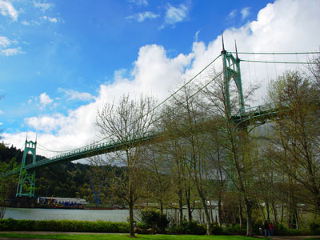
M.O. Stevens, CC BY-SA 4.0, via Wikimedia Commons; Image Size Adjusted

Cathedral Park
Park on the east shore of the Willamette River and situated under the St. Johns Bridge, was given its name due to the Gothic arches that support the bridge, which resemble a cathedral arch
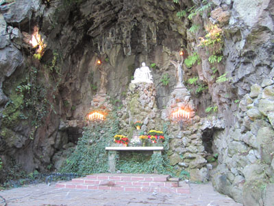
Another Believer, CC BY-SA 4.0, via Wikimedia Commons; Image Size Adjusted
_-_38.JPG){kind=link}
The Grotto
Outdoor shrine and sanctuary covering 62 acres set both at the foot of, and atop, a 110 foot (34 m) cliff
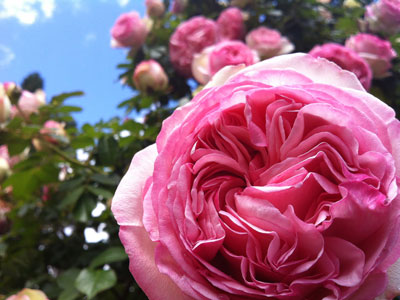
Envy fstop, CC BY-SA 4.0, via Wikimedia Commons; Image Size Adjusted

International Rose Test Garden
Rose garden featuring over 10,000 rose bushes of approximately 650 varieties
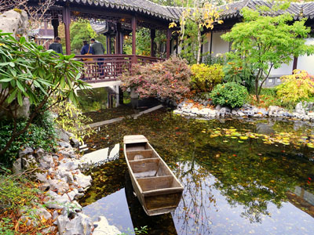
Daderot, CC0, via Wikimedia Commons; Image Size Adjusted

Lan Su Chinese Garden
Walled Chinese garden enclosing a full city block, roughly 40,000 square feet, and influenced by many of the famous classical gardens in Suzhou
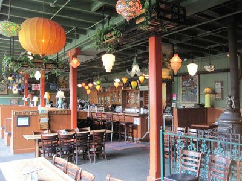
Shashi Bellamkonda from Potomac, USA, CC BY 2.0, via Wikimedia Commons; Image Size Adjusted

McMenamins Kennedy School
Former elementary school that has been converted to a hotel, movie theater and dining establishment with 35 guestrooms, a brewery, four bars, and a restaurant
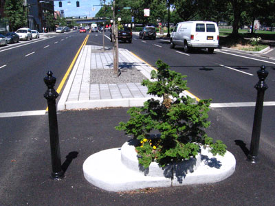
atul666 from Portland, USA, CC BY-SA 2.0, via Wikimedia Commons; Image Size Adjusted

Mill Ends Park
Tiny urban park, consisting of one tree, a small circle 2 ft (0.61 m) across, with a total area of 452 sq in is the smallest park in the world
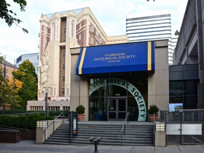
Steve Morgan, CC BY-SA 4.0, via Wikimedia Commons; Image Size Adjusted

Oregon Historical Society Museum
Museum containing over 85,000 artifacts relating to the history of the region in its collections
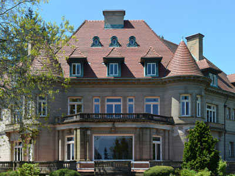
Chrismiceli, CC0, via Wikimedia Commons; Image Size Adjusted

Pittock Mansion
French Renaissance-style château in the West Hills of Portland, Oregon and open for touring
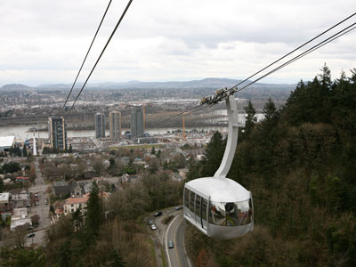
User:Cacophony, CC BY-SA 2.5, via Wikimedia Commons; Image Size Adjusted

Portland Aerial Tram
Aerial tramway in Portland, Oregon, that connects the city's South Waterfront district and the main Oregon Health & Science University campus, and is one of only two commuter aerial tramways in the US
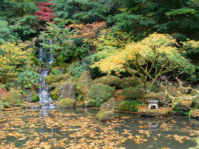
Daderot, CC0, via Wikimedia Commons; Image Size Adjusted

Portland Japanese Garden
Traditional Japanese garden occupying 12 acres and composed of eight garden spaces and a cultural village
-400.jpg)
Michael Barera, CC BY-SA 4.0, via Wikimedia Commons; Image Size Adjusted
.jpg){kind=link}
Powell's City of Books
Bokstore that claims to be the largest independent new and used bookstore in the world, containing over 68,000 square feet, about 1.6 acres of retail floor space
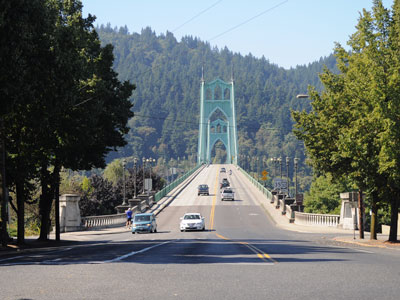
Joe Mabel, CC BY-SA 3.0, via Wikimedia Commons; Image Size Adjusted

St. Johns Bridge
Steel suspension bridge that spans the Willamette River is the only suspension bridge in the Willamette Valley and one of three public highway suspension bridges in Oregon
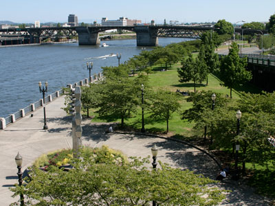
User:Cacophony, CC BY-SA 3.0, via Wikimedia Commons; Image Size Adjusted

Tom McCall Waterfront Park
36.59-acre park located in downtown Portland, along the Willamette River and was voted one of America's ten greatest public spaces
Overview
Portland is the largest city in Oregon, on the Willamette River near its confluence with the Columbia, and it is known as the "Rose City" and for its creative, green, and independent spirit. It is famous for its food carts and craft beer, its bridges, its parks, including the 5,200-acre Forest Park, and the famous bookstore Powell's City of Books. With Mount Hood visible to the east and the Columbia River Gorge less than an hour away, the city blends urban culture with a love of the outdoors.
Visitors come to Portland for the International Rose Test Garden and the Portland Japanese Garden, for Powell's, and for the Lan Su Chinese Garden. They also come for the food carts, breweries, and coffee, for the Portland Aerial Tram, and for day trips to Multnomah Falls and Mount Hood.
History
The Multnomah, Clackamas, and Chinook peoples lived along the rivers, and in 1845, Asa Lovejoy and Francis Pettygrove, who owned the land, settled the choice of the city's name by a coin toss: Pettygrove's hometown of Portland, Maine, won over Lovejoy's choice of Boston. The city grew as a river port at the end of the Oregon Trail and was a center for lumber and shipping. The 1905 Lewis and Clark Centennial Exposition brought attention, and the International Rose Test Garden was established in 1917. In the late twentieth century, Portland became known for its urban growth boundary, light rail, and a creative, progressive culture.
Sightseeing and Popular Landmarks
Powell's City of Books fills a whole city block downtown, and Tom McCall Waterfront Park runs along the Willamette River. The Pittock Mansion, a French Renaissance-style château built in 1914, has views of the city and Mount Hood, and the Grotto is a Catholic sanctuary in a forest. Mill Ends Park, in a median strip, is the world's smallest park, the St. Johns Bridge is a Gothic suspension bridge, and Cathedral Park sits below it.
Culture and Museums
The Portland Art Museum, the Oregon Historical Society Museum, the Oregon Museum of Science and Industry (OMSI), and the Oregon Zoo are major attractions, and the Oregon Historical Society has exhibits on the state's history. McMenamins Kennedy School is a converted elementary school with a hotel, bars, and a movie theater, and the city's food carts, craft breweries, and coffee roasters are central to its culture. The Portland Saturday Market is a large arts and crafts market.
Parks
Portland has more than 10,000 acres of parkland. The Rose Test Garden in Washington Park has more than 10,000 rose bushes with views of the city, and the Portland Japanese Garden, next to it, is considered one of the most authentic Japanese gardens outside Japan. Forest Park, one of the largest urban forests in the country, has more than 80 miles of trails, and Mount Tabor, an extinct volcano, is a city park. The Columbia River Gorge and Mount Hood are within an hour.
Sports
Portland has three major league teams. The Portland Trail Blazers of the NBA play at the Moda Center, and the Portland Timbers of Major League Soccer and the Portland Thorns of the National Women's Soccer League play at Providence Park downtown, which is known for its passionate fans, the "Timbers Army." The Blazers won the NBA championship in 1977.
Seasons and Weather
Portland has a mild, marine climate with dry summers and rainy winters. Summers are warm and sunny, with highs in the upper 70s and low 80s°F, and winters are cool and wet, with highs in the 40s°F and about 36 inches of rain a year, mostly from October to April. Snow is rare, and the June Rose Festival and summer are the best times to visit.
This article uses material from Wikipedia as well as information from official tourism and institutional sources. Key references include Travel Portland, Powell's Books, Portland Japanese Garden, Portland Parks & Recreation, Travel Oregon, Portland Trail Blazers, Portland Timbers, and National Weather Service Portland. Wikipedia material is from the article "Portland, Oregon", and is available under the Creative Commons Attribution-Share-Alike License 3.0.